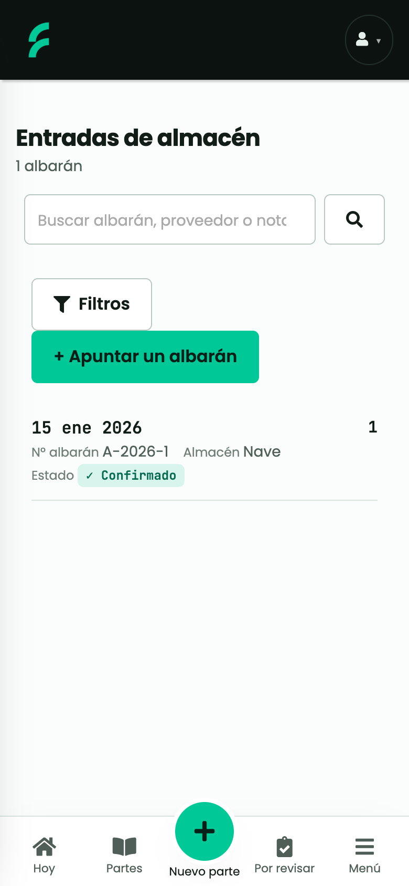
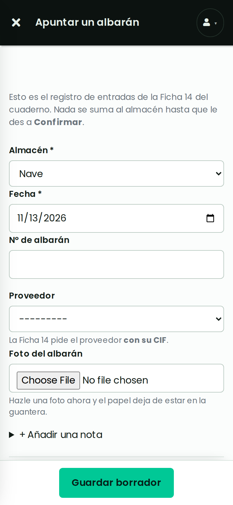
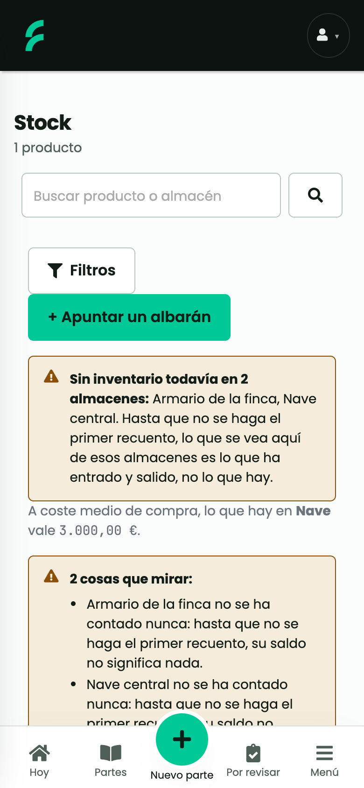

Llevar el almacén
title: Llevar el almacén: entradas y salidas author: luis reviewed_on: 2026-11-13 cuadrante: how-to modulo: warehouse
Saber qué tienes y dónde, sin llevarlo a mano. Las entradas son los albaranes que compras («Entradas»); las salidas no se apuntan aquí: salen de los partes, con el producto que cada faena consumió. El stock no se guarda en ningún sitio: se calcula siempre sumando el libro de movimientos, así que la pantalla nunca miente más que los apuntes que la alimentan. Y nada se registra solo: un albarán no suma al almacén hasta que le das a «Confirmar y meter en el almacén».
Antes de empezar
- Que el módulo esté encendido en tu empresa. Hay tres niveles: apagado (no verás el menú «Almacén»), «Solo entradas» (ves «Entradas» y «Productos») y «Completo» (además «Stock», con recuentos, traspasos, lotes y almacenes). El nivel lo fija la ficha de la empresa.
- Tener almacenes dados de alta para poder apuntar entradas en ellos.
- En nivel completo, el saldo de un almacén no significa nada hasta el primer recuento: la pantalla te lo dirá («Sin inventario todavía»), no te enseñará un cero falso.
Pasos
-
Da de alta los almacenes (nivel completo): menú «Almacén» → «Stock» → pestaña «Almacenes» → «Nuevo almacén». Un sitio donde hay producto: una nave, el armario de fitosanitarios de una finca, un remolque o una cuba. Marca «es el principal» en el que se proponga por defecto.
-
Apunta un albarán: «Almacén» → «Entradas» → «+ Apuntar un albarán».

Rellena Almacén, Fecha, Nº de albarán y Proveedor (la Ficha 14 del cuaderno pide el proveedor con su CIF), hazle una foto al albarán («hazle una foto ahora y el papel deja de estar en la guantera») y añade bajo «Qué ha llegado» cada producto con su cantidad y su precio por unidad (sin IVA; al confirmar se guarda como tarifa del producto). «Guardar borrador» lo deja apuntado sin tocar el almacén.
-
Confirma el albarán: ábrelo desde «Entradas» y pulsa «Confirmar y meter en el almacén» («Albarán confirmado: N producto(s) en X.»). Solo entonces suma existencias. Si te avisó de lo que le faltaba para la Ficha 14 (nº de albarán, proveedor con CIF, foto…), puedes completarlo antes: avisa, no bloquea. Para corregir uno confirmado, abajo del todo: «Reabrir para corregir — retira del almacén lo que metió».
-
Deja que los partes apunten las salidas. En el parte, cada línea de producto trae de dónde saca («Sale de», con tu almacén principal ya propuesto). Al «Guardar parte», lo consumido se resta de ese almacén. Si te quedas sin nada, el aviso sale tras guardar («El parte se ha guardado, pero X queda en -N kg en Y. Falta apuntar alguna entrada, o hay que hacer un recuento.»): avisa, nunca bloquea el parte. Una línea con «— sin almacén —» no consume nada.
-
Mueve producto entre almacenes: «Stock» → «Mover». Di de dónde sale, a dónde va y qué se mueve, y pulsa «Mover ahora» (o «Guardar sin mover» para dejarlo apuntado). Si el camino tarda, marca «Todavía no ha llegado: déjalo en camino y lo recibo luego»: el traspaso queda «En camino» (no está contado en ninguno de los dos) y al llegar lo abres y pulsas «Recibir en [destino]» apuntando lo que llegó de verdad. Si llegó menos, la merma queda anotada y solo se descuenta una vez.
-
Cuadra contando: «Stock» → «Contar». Elige el almacén y la fecha («En el primer recuento esta fecha es la de corte: el libro de ese almacén empieza ahí») y «Empezar a contar»: te sale una línea por producto con lo que dice el libro; apunta lo contado o pulsa «cuadra» cuando coincida. Puedes «Guardar y seguir luego»; «Cerrar y ajustar el almacén» escribe los ajustes y ya no tiene vuelta atrás (para corregirlo se hace otro recuento).
- Mira lo que queda: «Stock» → «Qué hay». Una fila por producto y almacén con lo que hay, filtros por almacén, tipo y agotados, y encima lo que hay que mirar: saldos en negativo, almacenes sin recuento, traspasos encallados, lotes que caducan y productos con el registro revocado. Pincha un producto para ver su extracto: cada movimiento y el saldo acumulado.

Si algo va mal
- «Un albarán sin productos no tiene nada que meter en el almacén.» → añade al menos una línea antes de confirmar.
- «El albarán X ya estaba confirmado. Para cambiarlo hay que reabrirlo, que borra sus movimientos y los vuelve a escribir.» → reábrela y vuelve a confirmar.
- «El producto X se mide en kg, no en l. Convertir unidades necesita una densidad por producto, que todavía no existe.» → la unidad es siempre la del producto; no se compra en una y se gasta en otra.
- «Ese lote no consta en ese almacén.» (en un parte) → el lote tiene que haber pasado antes por ese almacén.
- «Este traspaso ya se envió el …», «El origen y el destino son el mismo almacén.» o «Un traspaso sin productos no mueve nada.» → revisa origen, destino y líneas.
- «El recuento de X del Y ya estaba cerrado. Para corregirlo se hace otro, que es lo que deja rastro.» → el recuento cerrado no se edita.
- «N productos en negativo. Significa que se ha gastado más de lo que consta que entró: falta apuntar alguna entrada, o toca un recuento.» → no lo tapes: apunta la entrada que falta o cuenta el almacén.
- «Sin inventario todavía en X: … lo que se ve es lo que ha entrado y salido, no lo que hay.» → haz el primer recuento de ese almacén.